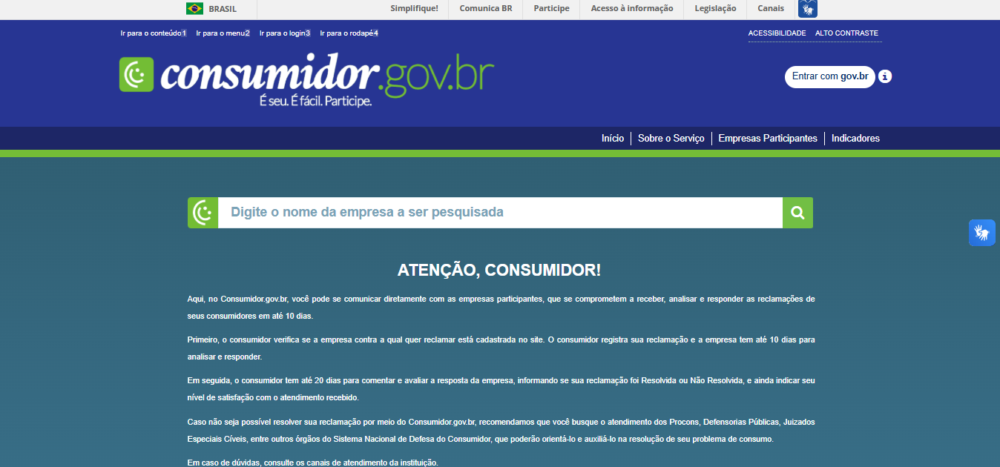

O Que Você Vai Aprender
- Como criar conta e fazer reclamação no Consumidor.gov.br (plataforma federal mais efetiva)
- Como usar o Procon Digital DF para problemas locais
- Diferenças entre Consumidor.gov.br e Procon - quando usar cada um
- O que você precisa ter em mãos: protocolo, prints, nota fiscal e comprovantes
- Como escrever uma reclamação efetiva: clara, objetiva e educada
- Quando a empresa é OBRIGADA a resolver seu problema
- Como acompanhar sua reclamação e o que fazer se não resolver
- Modelo prático de reclamação para copiar e adaptar
Antes de Começar: Você vai precisar de computador ou celular com internet, CPF e e-mail válido, conta Gov.br (veja Tutorial 1), todos os documentos do problema (nota fiscal, protocolo, prints), número do pedido ou contrato e descrição clara do que aconteceu. Quanto mais provas você tiver, maior a chance da empresa resolver!
1
Entender: Consumidor.gov.br vs Procon
Qual usar? Cada plataforma tem suas vantagens. Veja a diferença:
| Característica |
Consumidor.gov.br |
Procon |
| Gestão |
Federal (Governo Federal) |
Estadual (cada estado tem o seu) |
| Cadastro |
Precisa de conta Gov.br |
Cadastro próprio no site do Procon |
| Prazo resposta |
10 dias corridos |
10 dias úteis (ou mais) |
| Empresas |
Apenas empresas cadastradas |
Qualquer empresa |
| Taxa de solução |
Cerca de 80% (muito efetivo!) |
Varia (geralmente 60-70%) |
| Poder |
Exposição pública da empresa |
Pode aplicar multas e sanções |
| Melhor para |
Empresas grandes (bancos, telecom, e-commerce) |
Empresas locais, lojas físicas |
Recomendação: Comece sempre pelo Consumidor.gov.br! A taxa de resolução é altíssima (80%) porque as empresas se preocupam com a reputação pública. Se a empresa não estiver cadastrada lá, aí você vai no Procon.
Como saber se a empresa está no Consumidor.gov.br: Antes de criar conta, você pode pesquisar no site se a empresa participa da plataforma. Basta entrar em consumidor.gov.br e usar a busca.
2
Criar Conta no Consumidor.gov.br
Primeira etapa: Criar sua conta na plataforma federal. É rápido e usa o Gov.br que você já tem!
Como criar conta:
- Acesse:
www.consumidor.gov.br
- Clique em "Registrar Reclamação" ou "Entrar"
- Clique em "Entrar com gov.br"
- Digite seu CPF e senha do Gov.br
- Autorize o Consumidor.gov.br a acessar seus dados básicos
- Confirme seu e-mail (você receberá um código)
- Leia e aceite os termos de uso
- Pronto! Sua conta está criada

Página inicial do Consumidor.gov.br para criar conta
Não tem conta Gov.br? Você PRECISA ter para usar o Consumidor.gov.br. Volte ao Tutorial 1 deste portal e crie sua conta Gov.br primeiro. É rápido, gratuito e você usa em vários serviços do governo!
Segurança: O Consumidor.gov.br é um serviço oficial do governo federal. Seus dados estão protegidos e a plataforma é 100% segura e gratuita. Nunca pague para fazer reclamação!
3
Separar Documentos Necessários
Organize suas provas: Quanto mais documentos você tiver, mais forte é sua reclamação!
Documentos essenciais:
- Nota fiscal ou comprovante de compra (foto clara mostrando data, valor, produto)
- Número do pedido ou protocolo (se você já entrou em contato com a empresa)
- Prints de conversas (WhatsApp, chat, e-mail com atendimento)
- Fotos do problema (produto defeituoso, serviço mal feito)
- Contrato ou termo de compra (se houver)
- Comprovante de pagamento (boleto pago, comprovante de transferência, fatura cartão)
Como organizar os arquivos:
- Salve todos os documentos em uma pasta no celular ou computador
- Renomeie com nomes claros: "NotaFiscal.jpg", "ChatAtendimento.pdf"
- Se tiver muitas imagens, faça um PDF único com tudo junto
- Limite: arquivos de até 5 MB cada no Consumidor.gov.br
- Formatos aceitos: JPG, PNG, PDF
Dica para fotos: Tire fotos claras, com boa iluminação. Se é produto defeituoso, fotografe de vários ângulos mostrando o problema. Se é embalagem danificada, mostre tudo: caixa, produto, etiqueta de entrega.
Prazo importante: Você tem até 30 dias após a compra ou descoberta do problema para reclamar formalmente. Depois disso fica mais difícil (mas ainda é possível com boa argumentação).
4
Fazer Reclamação no Consumidor.gov.br
Agora vamos ao ponto: Registrar sua reclamação passo a passo na plataforma!
Como registrar:
- Faça login no
consumidor.gov.br
- Clique em "Registrar Reclamação"
- Passo 1 - Buscar empresa: Digite o nome da empresa e selecione na lista
- Passo 2 - Categoria do problema: Escolha o tipo (produto defeituoso, cobrança indevida, cancelamento, etc)
- Passo 3 - Descrever o problema:
- Título: seja direto (ex: "Produto defeituoso - Notebook com tela quebrada")
- Descrição: conte o que aconteceu de forma clara e cronológica
- O que você quer: reembolso, troca, reparo, cancelamento
- Limite: 4000 caracteres
- Passo 4 - Anexar documentos: Carregue todos os arquivos que você separou
- Passo 5 - Revisar: Leia tudo com atenção antes de enviar
- Passo 6 - Enviar: Clique em "Registrar Reclamação"
- Você receberá um número de protocolo - guarde!
Empresa tem 10 dias: A partir do registro, a empresa tem 10 dias corridos para responder sua reclamação. Você recebe notificação por e-mail quando houver resposta!
5
Como Escrever Reclamação Efetiva
A forma como você escreve IMPORTA: Uma reclamação bem escrita tem muito mais chance de ser resolvida!
Regras de ouro:
- Seja objetivo: Vá direto ao ponto. O que aconteceu? Quando? Qual o problema?
- Seja educado: Xingamentos e ameaças NÃO ajudam. Seja firme mas respeitoso
- Seja cronológico: Conte a história na ordem: comprei → recebi → problema → entrei em contato
- Cite datas e protocolos: "Em 10/12/2024 comprei...", "Protocolo 123456 em 15/12/2024"
- Diga o que você quer: Deixe claro: quer reembolso? Troca? Reparo? Cancelamento?
- Cite o Código de Defesa do Consumidor: "Conforme CDC, artigo 18..."
Evite:
- Texto desorganizado: Parágrafos enormes sem separação
- Xingamentos: "Essa empresa é um lixo" → Não ajuda!
- Ameaças vazias: "Vou processar!" → Se for processar, processe, não ameace
- LETRAS MAIÚSCULAS: Parece que você está gritando
- Muitos detalhes irrelevantes: Seja objetivo
Modelo de Reclamação (copie e adapte)
Assunto: Produto defeituoso - Notebook com tela quebrada
Prezados,
Em [DATA], realizei a compra do produto [NOME DO PRODUTO], modelo [MODELO], no valor de R$ [VALOR], conforme nota fiscal nº [NÚMERO] anexada.
O produto foi entregue em [DATA DE ENTREGA], porém ao abrir a embalagem constatei que [DESCREVA O PROBLEMA]. Entrei em contato com o SAC em [DATA], protocolo nº [NÚMERO], mas não obtive solução satisfatória.
De acordo com o Código de Defesa do Consumidor (Lei 8.078/90), artigo 18, o fornecedor tem responsabilidade pelos vícios aparentes ou ocultos dos produtos. Considerando que o produto foi entregue com defeito de fabricação, solicito:
[X] Reembolso integral do valor pago
[ ] Troca por produto novo e sem defeitos
[ ] Reparo sem custos
Anexo: nota fiscal, fotos do produto, prints do atendimento.
Aguardo solução no prazo legal.
Atenciosamente,
[SEU NOME COMPLETO]
CPF: [SEU CPF]
Use o modelo! Copie essa estrutura e adapte para o seu caso. Ela tem tudo que precisa: datas, fatos, base legal e pedido claro. Funciona muito bem!
6
Quando a Empresa É OBRIGADA a Resolver
Conheça seus direitos: O Código de Defesa do Consumidor protege você! Veja situações em que a empresa TEM que resolver.
Situações com direito GARANTIDO
1. Produto com defeito (vício):
- Empresa tem 30 dias para consertar
- Se não consertar: você pode escolher entre troca, reembolso ou desconto
- Vale para produtos novos E usados
2. Arrependimento de compra online:
- Você tem 7 dias para desistir sem dar explicação
- Vale para compras pela internet, telefone ou fora da loja
- Empresa deve devolver TODO o dinheiro, inclusive frete
3. Propaganda enganosa:
- Se a empresa prometeu algo e não entregou
- Você pode exigir cumprimento ou reembolso
- Guarde prints da propaganda!
4. Cobrança indevida:
- Empresa deve devolver em DOBRO o que cobrou errado
- Vale para qualquer cobrança sem motivo
5. Cancelamento de serviço:
- Você pode cancelar qualquer serviço quando quiser
- Empresa não pode cobrar multa abusiva
- Deve ser processado em até 30 dias
Empresa se recusa a resolver? Se mesmo após reclamação no Consumidor.gov.br a empresa não resolver, você pode: 1) Fazer reclamação também no Procon, 2) Processar no Juizado Especial Cível (pequenas causas - até 20 salários mínimos não precisa advogado), 3) Denunciar práticas abusivas.
Base legal: Tudo isso está no Código de Defesa do Consumidor (CDC - Lei 8.078/90). Quando citar artigos na reclamação, isso mostra que você conhece seus direitos e aumenta as chances de solução rápida!
7
Usar Procon Digital DF (Alternativa)
Se a empresa não está no Consumidor.gov.br: Use o Procon Digital do Distrito Federal!
Como usar o Procon DF:
- Acesse:
www.procon.df.gov.br
- Clique em "Atendimento Digital" ou "Registrar Reclamação"
- Faça seu cadastro com CPF, nome, e-mail e telefone
- Confirme o cadastro pelo e-mail enviado
- Faça login no sistema
- Clique em "Nova Reclamação"
- Preencha os dados da empresa (nome, CNPJ se souber, endereço)
- Descreva o problema detalhadamente
- Anexe documentos (nota, prints, fotos)
- Informe o que você quer como solução
- Envie a reclamação
Atendimento presencial: O Procon DF também tem atendimento presencial em vários pontos do DF (Taguatinga, Ceilândia, Plano Piloto). Você pode agendar pelo site ou telefone 151 se preferir ir pessoalmente.
Documentação: No Procon, você também pode fazer reclamação por formulário físico levado presencialmente. Mas o digital é mais rápido e você acompanha online!
8
Acompanhar e Finalizar a Reclamação
Após registrar: Acompanhe sua reclamação e saiba como agir em cada situação.
Status possíveis no Consumidor.gov.br:
- Aguardando resposta da empresa: Empresa tem 10 dias. Aguarde.
- Respondida: Empresa enviou resposta. Leia com atenção!
- Finalizada: Você ou a empresa finalizaram o caso
- Empresa não respondeu: Passou 10 dias e não houve resposta (isso pega mal para a empresa!)
Quando a empresa responde, você deve:
- Ler a resposta completa com atenção
- Verificar se a solução proposta te atende
- Se SIM: aceitar e finalizar como "Resolvido"
- Se NÃO: você pode comentar explicando por que não aceitou
- Avaliar o atendimento da empresa (nota de 1 a 5)
O que fazer se não resolver:
- Opção 1: Fazer reclamação também no Procon (são vias independentes)
- Opção 2: Procurar Juizado Especial Cível (pequenas causas)
- Opção 3: Contratar advogado para ação judicial
- Opção 4: Denunciar no Ministério Público (casos graves)
Avalie sempre: Sua avaliação ajuda outros consumidores! Se a empresa resolveu bem, dê nota boa. Se não resolveu ou foi mal atendido, dê nota baixa. Isso fica público e as empresas se importam MUITO com a reputação!
Índice de solução: No Consumidor.gov.br você pode ver o índice de solução de cada empresa (% de reclamações resolvidas). Empresas com índice baixo ficam mal vistas e perdem clientes!
Artigos do CDC que Você Deve Conhecer
| Artigo CDC |
O Que Diz |
| Artigo 18 |
Produto com defeito: empresa tem 30 dias para consertar ou deve trocar/reembolsar |
| Artigo 49 |
Direito de arrependimento: 7 dias para desistir de compra online sem dar motivo |
| Artigo 35 |
Propaganda enganosa: empresa deve cumprir o que prometeu ou devolver dinheiro |
| Artigo 42 |
Cobrança indevida: consumidor tem direito a receber em DOBRO o que pagou errado |
| Artigo 6º, III |
Direito à informação: empresa deve informar claramente sobre produto/serviço |
Use nas reclamações: Quando você cita os artigos do CDC na sua reclamação, mostra que conhece a lei e isso aumenta muito as chances da empresa resolver rápido!
Dúvidas Comuns
1. Posso fazer reclamação no Consumidor.gov.br E no Procon ao mesmo tempo?
Resposta: Sim! São vias independentes. Você pode (e às vezes deve) registrar nos dois lugares. Isso aumenta a pressão sobre a empresa. Mas recomendamos começar pelo Consumidor.gov.br porque a taxa de resolução é mais alta.
2. A empresa não respondeu no Consumidor.gov.br. E agora?
Resposta: Se a empresa não responder em 10 dias, isso fica registrado publicamente e prejudica a reputação dela. Você deve: 1) Fazer reclamação no Procon também, 2) Avaliar negativamente a empresa, 3) Considerar ir ao Juizado Especial Cível se o valor compensar.
3. Preciso ter nota fiscal para reclamar?
Resposta: A nota fiscal ajuda MUITO, mas não é obrigatória em todos os casos. Se você não tem, pode usar: comprovante de pagamento, extrato do cartão, prints da compra online, mensagens de WhatsApp, fotos do produto. Qualquer prova que você tenha é válida!
4. Posso fazer reclamação de serviço público (água, luz, internet)?
Resposta: SIM! Empresas públicas e privadas que prestam serviços públicos (Caesb, Neoenergia, operadoras de telefonia) também estão sujeitas ao CDC. Você pode reclamar normalmente no Consumidor.gov.br ou Procon.
5. Quanto tempo tenho para fazer reclamação?
Resposta: Depende do tipo de problema. Para produtos com defeito aparente: 30 dias (produtos não duráveis) ou 90 dias (produtos duráveis). Para defeitos ocultos que aparecem depois: começa a contar do dia que você descobriu o problema.
Dicas Extras de Ouro
1. Tente resolver direto com a empresa primeiro: Antes de fazer reclamação formal, tente resolver pelo SAC, chat ou WhatsApp da empresa. Muitas vezes eles resolvem na hora. Se não resolver, aí sim você faz reclamação oficial e já tem o protocolo para anexar!
2. Fotografe TUDO: Produto chegou com defeito? Fotografe a embalagem fechada, depois aberta, o produto de todos os ângulos mostrando o problema. Quanto mais provas visuais, melhor. Fotos valem mais que mil palavras!
3. Guarde todos os e-mails e mensagens: Não apague nenhuma conversa com a empresa! Se você tentou resolver por WhatsApp, chat ou e-mail, faça print de TUDO e anexe na reclamação. Isso prova que você tentou resolver de boa fé primeiro.
4. Seja persistente mas educado: Se a empresa ofereceu solução mas você não aceitou, explique com educação por que não atende. Seja firme nos seus direitos mas sempre respeitoso. Agressividade só atrapalha!
5. Acompanhe pelo menos 1x por dia: Entre no site diariamente para ver se tem resposta. Quanto mais rápido você responder à empresa, mais rápido o problema se resolve. Ative notificações por e-mail para não perder nenhuma atualização!
Resolvendo Problemas Comuns
Problema: A empresa não está cadastrada no Consumidor.gov.br
Solução:
- Vá direto para o Procon (digital ou presencial)
- Você também pode fazer reclamação no Reclame Aqui (não é oficial mas as empresas acompanham)
- Para empresas grandes, pode tentar as redes sociais (muitas respondem rápido no Instagram/Twitter por exposição)
- Se for empresa local pequena, tente resolver presencialmente primeiro
Problema: Não consigo anexar documentos (arquivo grande demais)
Solução:
- Limite é 5 MB por arquivo no Consumidor.gov.br
- Comprima imagens usando sites gratuitos como TinyPNG ou iLoveIMG
- Junte várias imagens em um único PDF (use sites como iLovePDF)
- Se for nota fiscal grande, tire foto mais de longe abrangendo tudo mas com qualidade razoável
- Priorize os documentos mais importantes se não couber tudo
Problema: A empresa respondeu mas não concordo com a solução
Solução:
- Responda educadamente explicando por que não aceita
- Cite novamente seus direitos e base legal (artigos do CDC)
- Seja específico: "A empresa ofereceu desconto mas eu quero reembolso integral pois o produto veio quebrado"
- Se persistir sem solução, escale: Procon → Juizado Especial → Ação Judicial
- Avalie negativamente a empresa no final do processo
Parabéns! Você Concluiu Este Tutorial!
Agora você sabe:
- Diferença entre Consumidor.gov.br e Procon
- Criar conta e fazer reclamação no Consumidor.gov.br
- Organizar documentos e provas
- Escrever reclamações efetivas
- Conhecer seus direitos do CDC
- Usar o Procon Digital DF
- Acompanhar e finalizar reclamações
- O que fazer se não resolver
Lembre-se: Use o Consumidor.gov.br sempre que possível - a taxa de resolução é de 80%! Não tenha medo de reclamar quando seus direitos forem desrespeitados. Consumidor informado é consumidor respeitado!